- Начало работы с редактором
- Главное меню редактора
- Дерево элементов
- Область редактирования
- Свойства элементов управления
- Панель инструментов
- Диалог Font Manager
- Диалог Localization Manager
- Создание нового проекта
- В главном меню редактора выбираем File->New project.
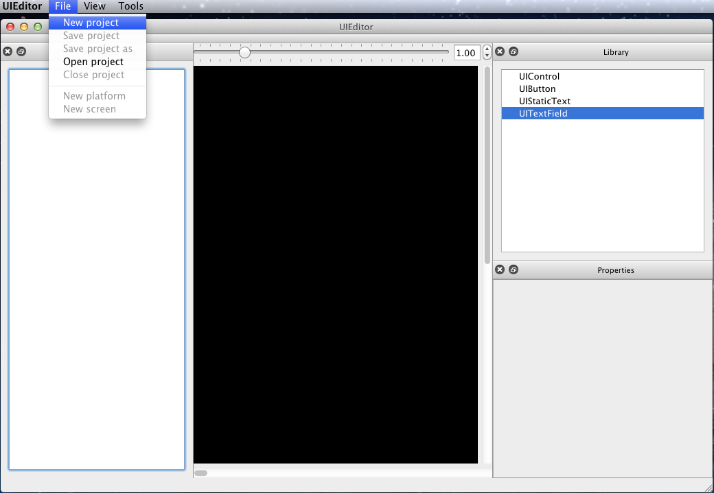
- В открывшемся файловом диалоге, нужно задать папку, в которой будет храниться проект, а также имя проекта. После этого нажимаем "Save".
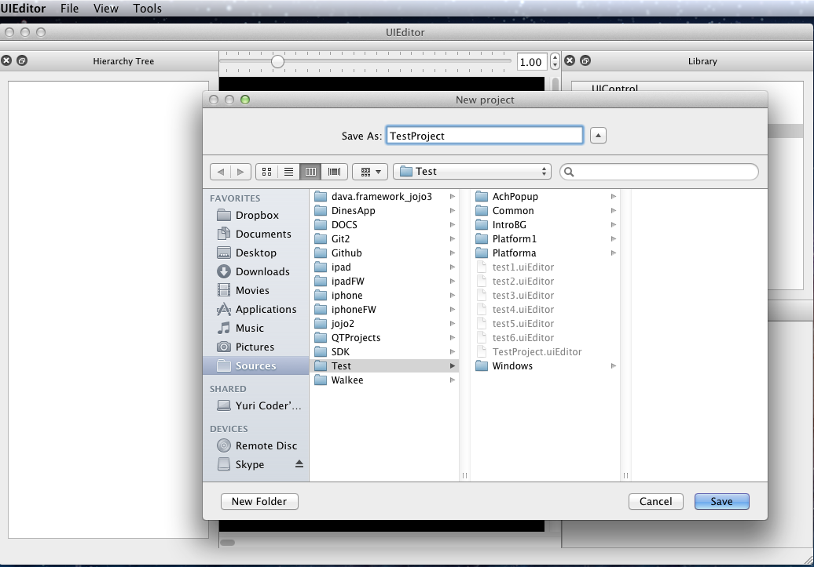
- В главном меню редактора выбирам File->Project->New Platform. В открывшемся диалоге, необходимо задать имя вашей платформы,
а также ее размеры - ширину и высоту в пикселях. После выставления параметров нажимаем "OK". Если действите выполнено успешно -
имя платформы должно появиться в блоке "Hierarchy Tree". Можно создавать произвольное количество платформ (Новую платформу можно создать с помощью соответствующей
кнопки на панели инструментов).
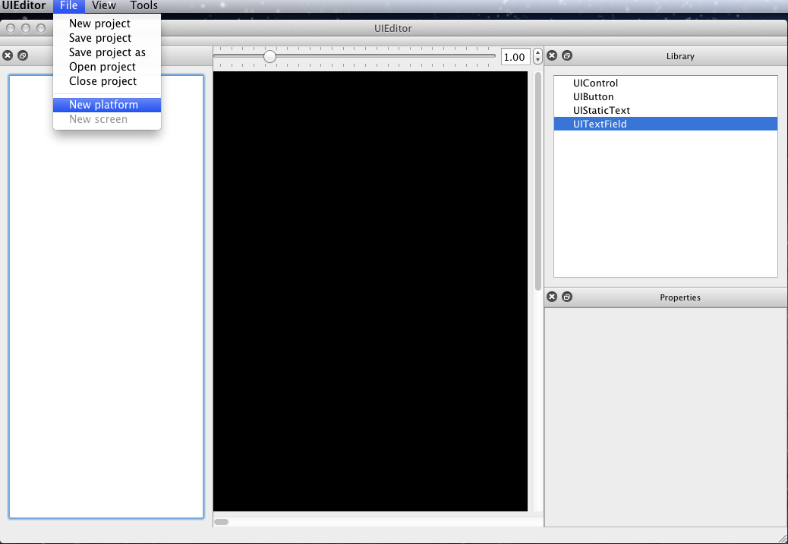
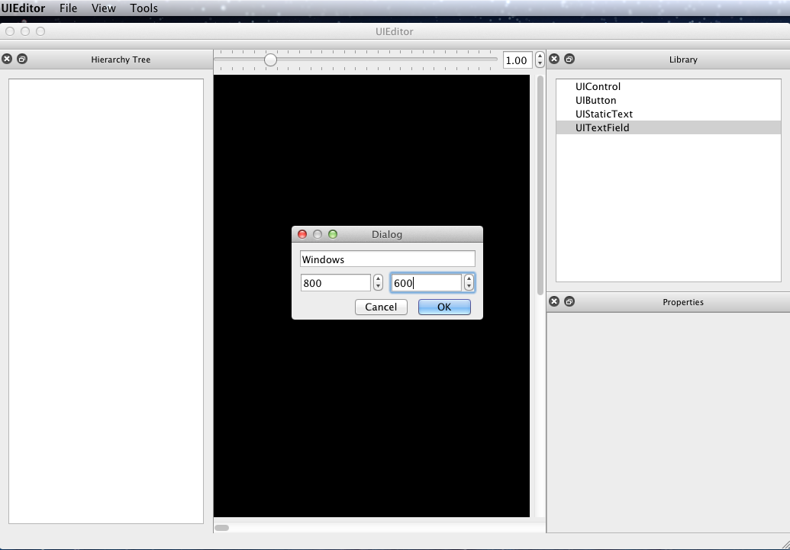
- В главном меню редактора выбирам File->Project->New Screen. Это позволит создать "экран", на котором в дальнейшем будут размещаться
элементы управления. В открывшемся диалоге, необходимо выбрать платформу, к которой будет привязан "экран", а также указать его имя.
После выставления параметров нажимаем "OK". Новый экран получит размеры, которые соотвествуют размерам платформы к которой он привязан (Для создания экрана также можно
воспользоваться соответсвующей кнопкой на панели инструментов).
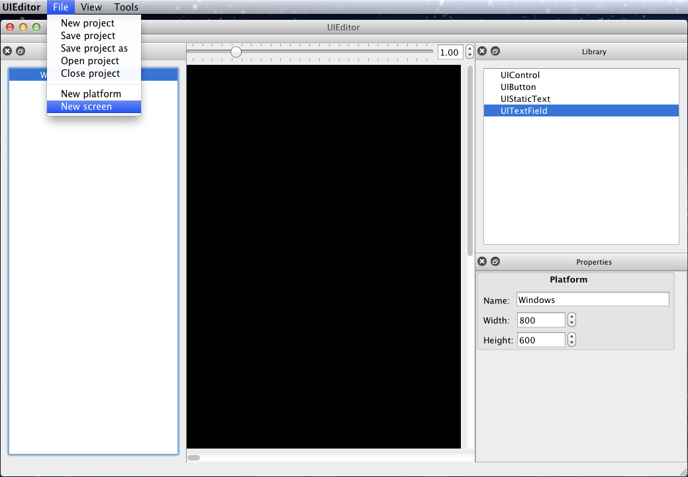
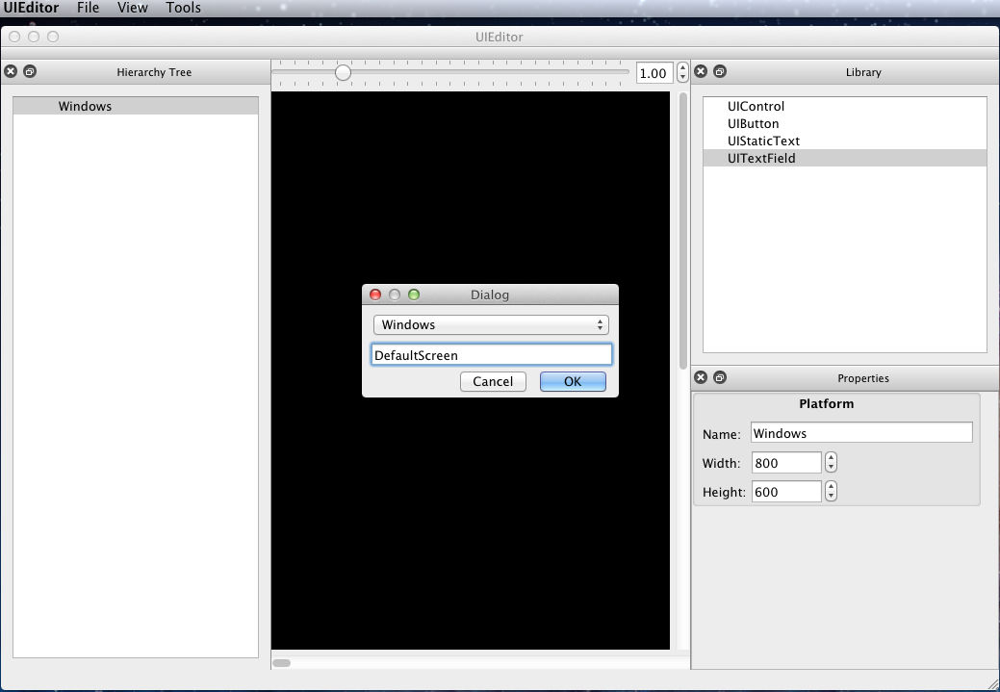
- Для коректной работы с созданым проектом, необходимо сначала его сохранить. В главном меню редактора выбираем File->Save Project. В случае
успешного сохранения, в папке проекта (которую мы задали в п.п. 1.2.2) будет создана новая папка (или несколько в зависимости от количества "платформ")
имя которой будет совпадать с именем платформы.
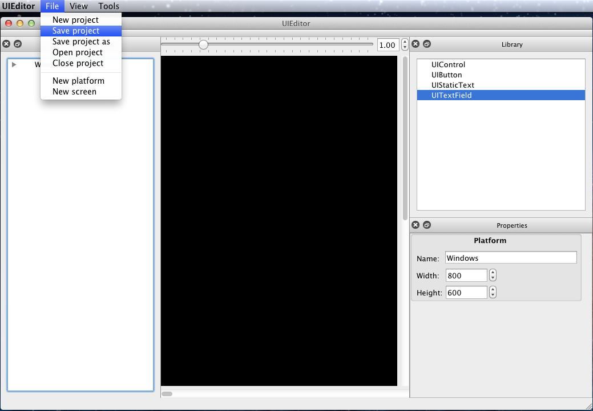
- Открытие существующего проекта
- В главном меню редактора выбираем File->Open project.

- В открывшемся файловом диалоге, выбираем папку с проектом и нажимаем "Open".
В случае успешной загрузки будет построено дерево объектов, будут созданы платформы и экраны, а текущий экран отобразится в окне редактирования.
- Загрузить существующий проект можно также через список ранее открытых проектов - File->RecentProjects, либо же воспользоваться соответствующей кнопкой на
панели инструментов.

- Установка шрифтов
- По умолчанию для новых элементов управления (Control-ов) используется шрифт MyriadPro-Regular.otf. Он находится во внутренних
ресурсах приложения и поменять его нельзя. Для того чтобы получить возможность менять шрифт элементов управления - необходимо установить новые шрифты.
- Обычные шрифты(true type), которые могут быть использованы в редакторе, находятся в папке Fonts (кроме шрифта по умолчанию).
- Для того чтобы установить новые шрифты, нужно их скопировать в папку <Название проекта>\Data\Fonts (если по указаному пути нет такой папки -
нужно создать новую).
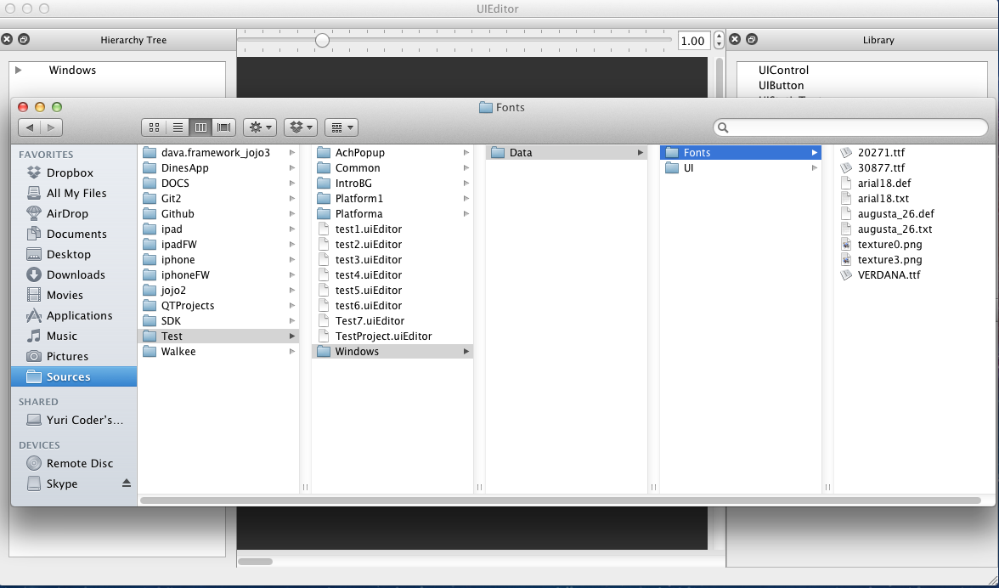
- В редакторе используются два типа шрифтов - обычные TrueType шрифты (поддерживаются шрифты с расширением *.ttf, *.otf, *.fon, *.fnt) и
графические шрифты. Графические шрифты состоят из трех файлов - определение шрифта (Font Definition - расширение *.def),
текстура шрифта (Font Sprite - расширение *.txt) и непосредственно графического файла, который привязан к текстуре.
- Что бы посмотреть какие шрифты доступны к использованию, в главном меню редактора выбираем Tools->Font Manager. В открывшемся диалоге, будет
список установленных шрифтов и их тип (обычный - Basic или графический - Graphics).
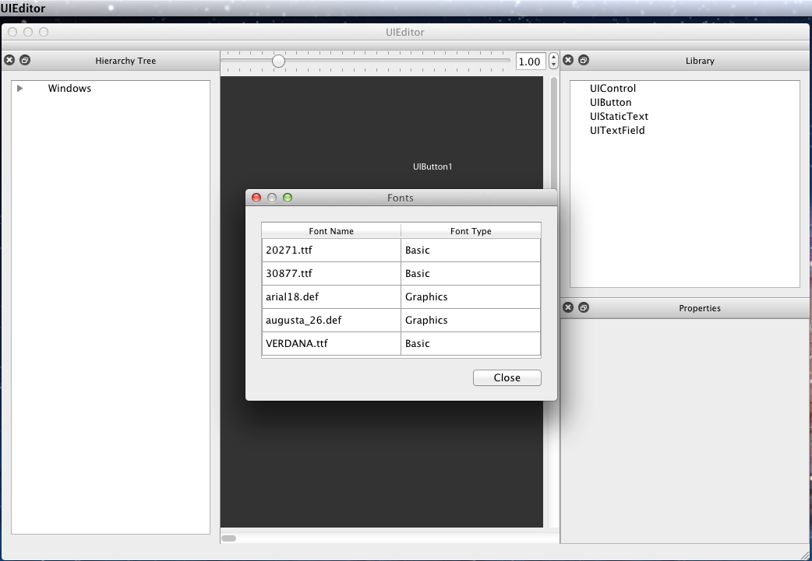
- Установка графических шрифтов и текстур
- Файлы текстур (в формате psd) необходимо скопировать в папку <Название проекта>\DataSource\Gfx (если такой папки нет - необходимо создать ее).
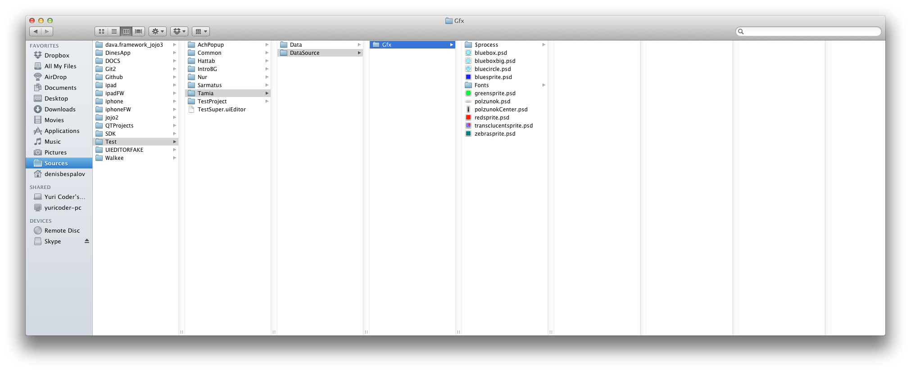
- Файлы текстур для графических шрифтов (в формате psd) необходимо скопировать в папку <Название проекта>\DataSource\Fonts
- В редактор встроен упаковщих текстур. Он запускается в момент когда пользователь собирается установить текстуру на элемент
управления или поменять шрифт текста элемента.
- File
- New Project - открывает файловый диалог сохранения нового проекта.
- Save Project - сохраняет текущий проект. Команда недоступна если нет активного проекта.
- Open Project - открывает существующий проект.
- Close Project - закрывает текущий проект. Команда недоступна, если нет активного проекта.
- Project - подменю для управления активным проектом.
- New Platform - создает новую платформу для текущего проекта. Команда недоступна если нет активного проекта.
- New Screen - создает новый экран редактирования для выбраной платформы. Команда недоступна если нет активного проекта и платформы.
- Recent projects - список последних 5 проектов которые были открыты.
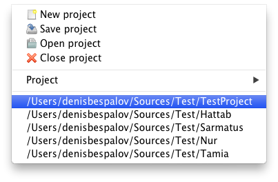
- Edit
- Undo - отменяет последнее действие.
- Redo - возобновляет последнее действие, если оно было отменено.
- Special characters - открывает диалог выбора специальных символов, которые можно поместить в текст элементов управления.
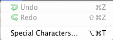
- View
- Hierarchy Tree - показывает/прячет блок дерева элементов управления редактора.
- Library - показывает/прячет блок библиотеки элементов управления редактора.
- Properties - показывает/прячет блок свойств элементов управления редактора.
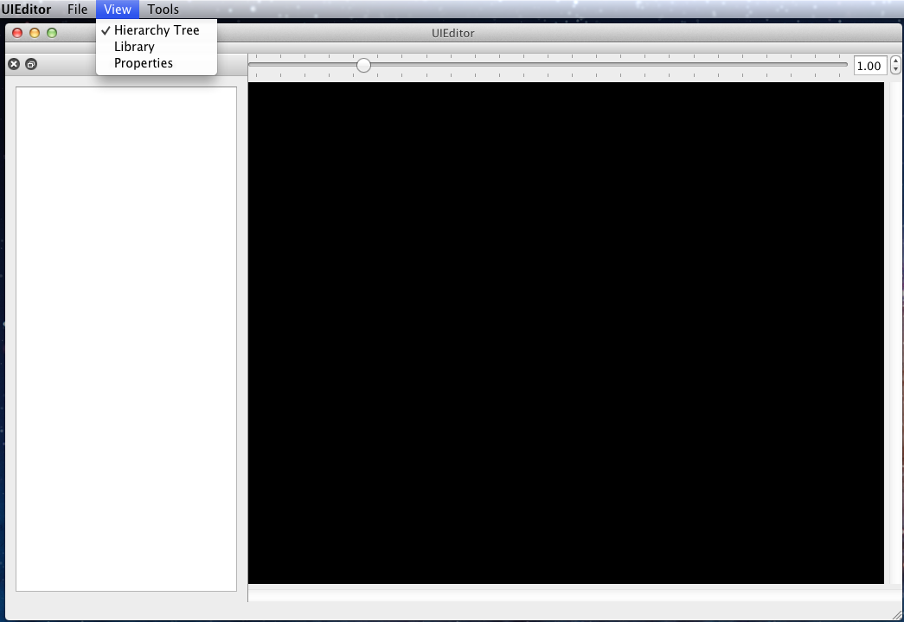
- Tools
- Font Manager - открывает диалог управления шрифтов.
- Localization Manager - открывает диалог управления локализациями.
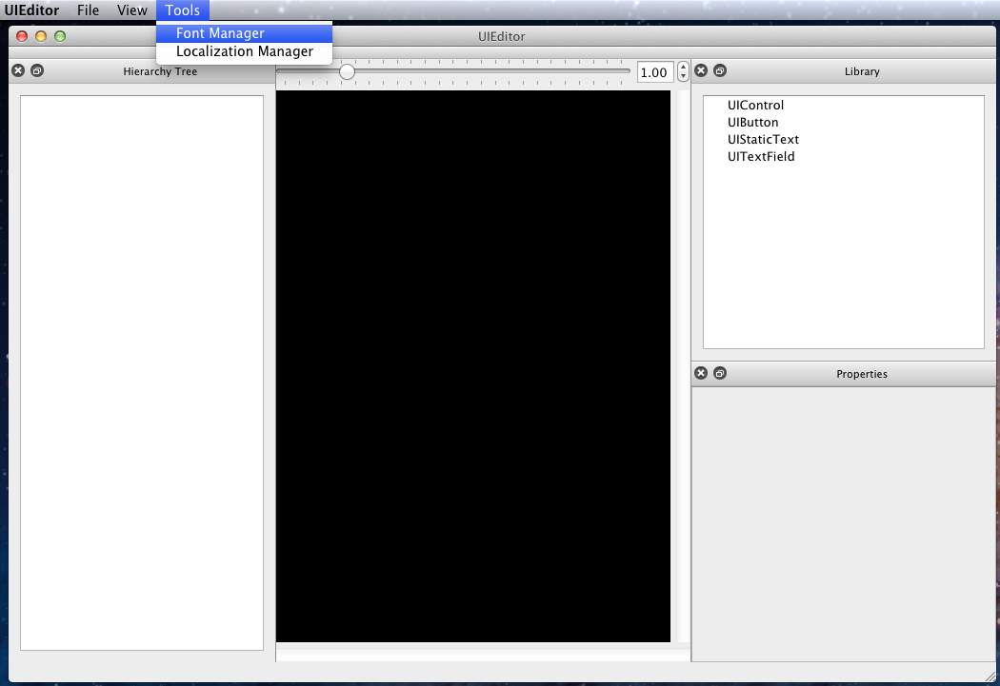
- Help
- Help - открывает файл-инструкцию (этот документ).
- В блоке Hierarchy Tree представлено дерево элементов.
- Навигация в дереве элементов соответствует стандартной схеме навигации в подобных структурах.
- Родительским элементом для всех веток дерева является платформа. Второй веткой дерева (дочерний элемент платформы) является экран. Экран в свою очередь
является родительским элементом для всех веток дерева, которые соответствуют элементам управления.
- Для элементов дерева через контекстное меню доступны следующие действия:
- Delete - удаляет выбраный элемент, все вложенные элементы будут также удалены.
- Copy - копирует выбранный элемент в буфер обмена.
- Paste - вставляет из буфера обмена элемент. Команда доступна только для элемента дерева типа "экран".
- Create screen - открывает диалог создания нового экрана. Команда доступна только для элемента дерева типа "платформа".
- Можно менять порядок и вложенность элементов управления в дереве используя механизм drag and drop. Любой элемент управления может быть вложен в другой элемент.
- Также доступно копирование элементов с помощью механизма drag and drop. Для этого достаточно начать перетаскивание элемента с зажатой клавишей Control.
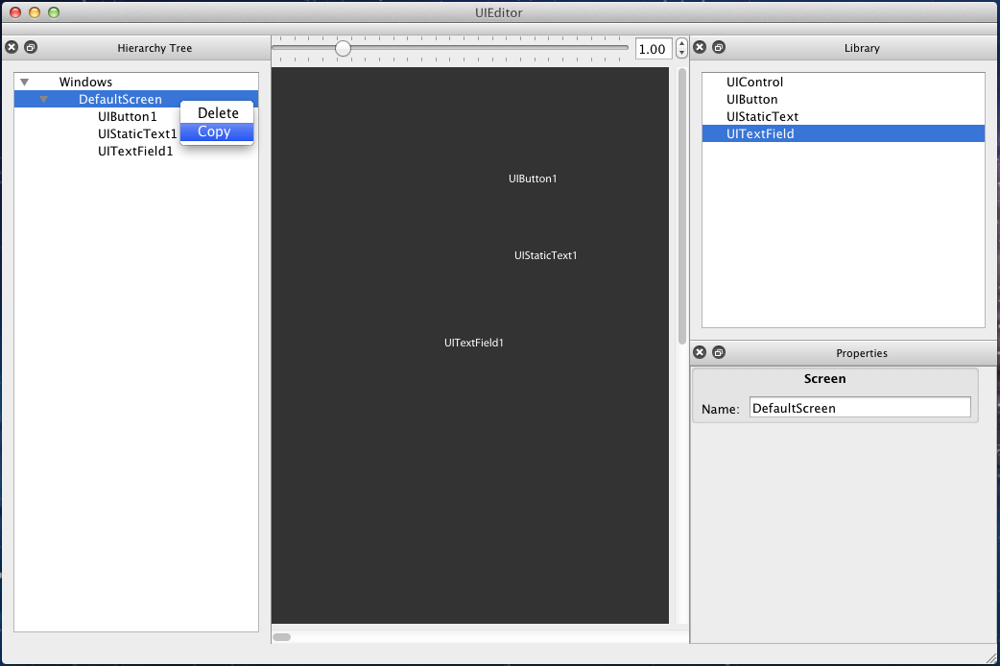
- Создание и удаление элементов управления.
- Прежде чем создавать элемент управления, в редакторе должен быть открыт проект, создана платформа и экран.
- Для создания нового элемента управления необходимо перетащить соответствующий элемент из блока "Library" непосредственно в область экрана.

- Новый созданный элемент отобразится в области экрана и станет текущим (Текущий выбранный элемент выделен красной прямоугольной рамкой).
- Что бы удалить выбраный элемент необходимо нажать клавишу "del".
- Перемещение и изменение размеров элементов управления
- Расположение элемента управления на экране можно менять используя механизм drag and drop, либо же стрелки управления.
- Для изменения размера выделенного элемента управления, необходимо подвести курсор к его границе. Появятся стрелки изменения размеров.
- Для изменения масштаба элементов на выбраном экране, необходимо воспользоваться соответствующей шкалой вверху области редактирования. Также можно воспользоваться
комбинацией Control + MouseWheel (Cmd + MouseWheel для Mac).
- Выделение нескольких элементов управления на экране осуществляется комбинацией SHIFT + щелчок левой кнопки мышки, либо же обычным выделением
рамкой при зажатой левой кнопке мышки.
- Копирование элементов управления
- Для копирования выделенных элементов на экране, нужно зажать левую кнопку мышки и клавишу Control(Cmd для Mac) и начать перетаскивание.
- Скопированные элементы автоматически станут текущими и появятся в дереве эелементов.
- Для завершения копирования необходимо отпустить левкую кнопку мышки.
- В случае копирования элементов, у которых разные "родители" в дереве, все выделенные элементы будут скопированых в первый доступный "родительский" элемент.
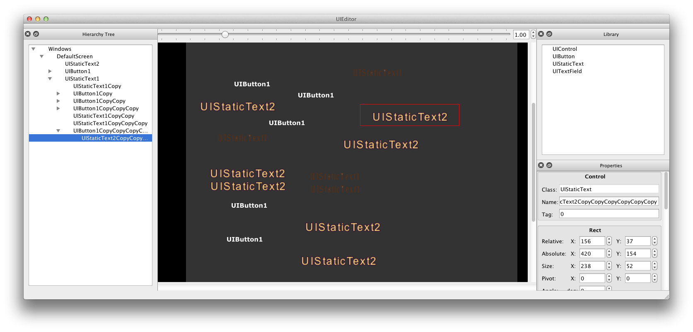
- Блок Properties содержит в себе набор виджетов, в каждом из которых сгруппированы по типу свойства элементов управления. На текущий момент доступно 6 групп:
- Control - общие свойства элемента управления.
- Rect - свойства отвечающие за местоположение экране и размеры элемента управления.
- State - выпадающий список для установки "состояния" свойств элемента управления (например для элемента управления UIButton для разных состояний можно выставить различный шрифт
и текст, цвет заливки и еще ряд свойств).
- Text - свойства для установка текста, шрифта и размера шрифта элемента управления. Этот блок свойств недоступен для элемента управления UIControl. Также блок имеет некоторые различия
для элементов UIButton/UIStaticText и UITextField.
- Background - свойства для установки цвета заливки, типа заливки, текстуры, внутренней рамки, выравнивания текста и т.п.
- Flags - логические/булевские свойства элемента управления.
- Блок свойств Control
- Class - имя класса элемента управления. Только чтение.
- Name - имя элемента управления.
- Tag - тег элемента управления.
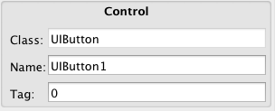
- Блок свойств Rect
- Relative X: Y: - Относительные координаты крайней верней левой точки элемента управления на экране.
- Absolute X: Y: - Абсолютные координаты крайней верхней левой точки элемента управления на экране.
- Size X: Y: - Размеры элемента управления (ширина и высота).
- Pivot Point X: Y: - Точка поворота содержимого элемента управления.
- Angle - Угол поворта содержимого элемента управления от -360 до 360 (в градусах).
При изменении угла у родительского элемента управления, угол наклона содержимого также меняется
у всех дочерних элементов.
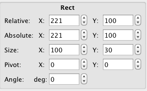
- Блок свойств Aligns
- Left: - отступ от левого края родительского элемента управления.
- Hcenter: - отступ от центра по горизонтали родительского элемента управления, положительные значения – сдвиг вправо, отрицательные – влево
- Right: - отступ от правого края родительского элемента управления.
- Top: - отступ от верхнего края родительского элемента управления.<
- VCenter: - отступ от центра по вертикали родительского элемента управления, положительные значения – сдвиг вниз, отрицательные – вверх
- Bottom: - отступ от нижнего края родительского элемента управления.<

- Блок State
- Выпадающий список с доступными "состояниями" элемента управления.
- Состояние элемента управления могут быть такими: Normal, Pressed Inside, Pressed Outside, Disabled, Selected, Hover
- Для каждого состояния можно задать различный текст, цвет заливки, текстуру, шрифт, а также - Draw Type, Color Inherit, Align
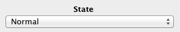
- Блок свойств Text
- Localization Key - Ключ локализации. При заданом ключе, редактор попытается вычитать по этому ключу соответствующий ему текст из папки локализации для выбраного языка.
- Control Text - Отображает текущий текст элемента управления. Доступна только для чтения.
- "Set text for all states" - в отмеченом виде позволяет устанавливать текст для всех состояний элемента управления. В противном случае текст
будет установлен только для текущего состояния.
- Font - Кнопка выбор шрифта элемента управления. В текст кнопки отображается относительный путь к файлу шрифта (в случае графического шрифта будет показан еще
относительный путь к файлу текстуры).
- Font size - выставление размера шрифта элемента управления.
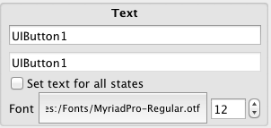
- Блок свойств Background
- Color - кнопка выбора цвета заливки элемента управления. При нажатии будет открыт стандартный диалог выбора цвета. Выбраный цвет также отобразится на кнопке.
- Sprite - выбор текстуры для элемента управления. В текстовом поле отображется путь к файлу текстуры, кнопка "..." открывает файловый диалог выбора файла текстуры, кнопка "х"
сбрасывает текстуру элемента управления.
- Frame - фрейм элемента управления.
- Draw Type - управление содержимым элемента управления.
- Color Inherit - параметр наложения слоев сореджимого элемента управления.
- Align - выравнивание содержимого элемента управления.

- Блок свойств Flags
- Visible - прячет/показывает элемент управления на экране.
- Enabled - включает/выключает элемент управления.
- Input - позволяет/запрещает редактирование содержимого элемента управления.
- Clip Contents - позволяет/запрещает перекрывать события дочерних элементов управления.
- Selected - выделяет/снимает выделение с элемента управления.
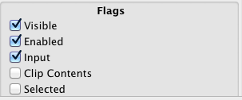
- Изменение текста элемента управления
- Что бы изменить текст элементов управления UIButton и UIStaticText необходимо задать ключ локализации. Напрямую изменить текст этих элементов нельзя.
- В случае если не установлен путь к папке с файлами локализации или введенный ключ не обнаружен, отобразиться введеный текст.
- При заданом флаге "Set text for all states" введеный текст будет установлен для всех состояний элемента управления, в противном случае только в том которое выбрано в выпадающем списке блока State.
- Изменение шрифта элемента управления
- Что бы изменить шрифт элемента управления необходимо нажать на соответствующую кнопку в блоке свойств Text.
- В открывшемся диалоге, необходимо выбрать из списка нужный шрифт и нажать кнопку "OK".
- В случае выбора графического шрифта, будет открыт дополнительный файловый диалог с просьбой указать текстуру шрифта.
- Изменения вступят в силу сразу же, а кнопка выбора шрифта отобразит относительный путь к шрифту (и текстуре в случае графического).
- Рекомендуется использовать только те шрифты который установлены в папку Fonts платформы проекта.
- Изменение текстуры элемента управления
- Что бы изменить текстуру элемента управления необходимо нажать на соответствующую кнопку в блоке свойств Background.
- В открывшемся файловом диалоге, необходимо выбрать файл текстуры (формат *.txt).
- Для удаления текстуры элемента управления, необходимо нажать соответствующую кнопку в блоке свойств Background.
- На панели инструментов продублированны основные функции редактора.
 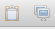
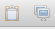
- Font Manager предназначен для отображения списка установленных шрифтов, а также для смены шрифта элемента управления.
- Диалог управления шрифтами можно открыть двумя способами - через главное меню или через соответствующую кнопку в блоке свойств для
конкретного элемента управления.
- Во втором случае в диалоге будет доступна кнопка "OK", по нажатию которой, у текущего элемента управления будет установлен шрифт выбранный в диалоге.
- В случае выбора графического шрифта будет открыт дополнительный файловый диалог для выбора файла с текстурой.
- Localization Manager преназначен для установки папки локализации и выбора текущего языка.
- Для выбора папки локализации нужно нажать кнопку "Choose directory". В открывшемся файловом диалоге нужно выбрать директорию локализации.
После этого станет доступна смена языков.
- Для смены текущего языка необходимо выбрать нужный тип из выпадающего списка. Изменения вступят в силу сразу же.
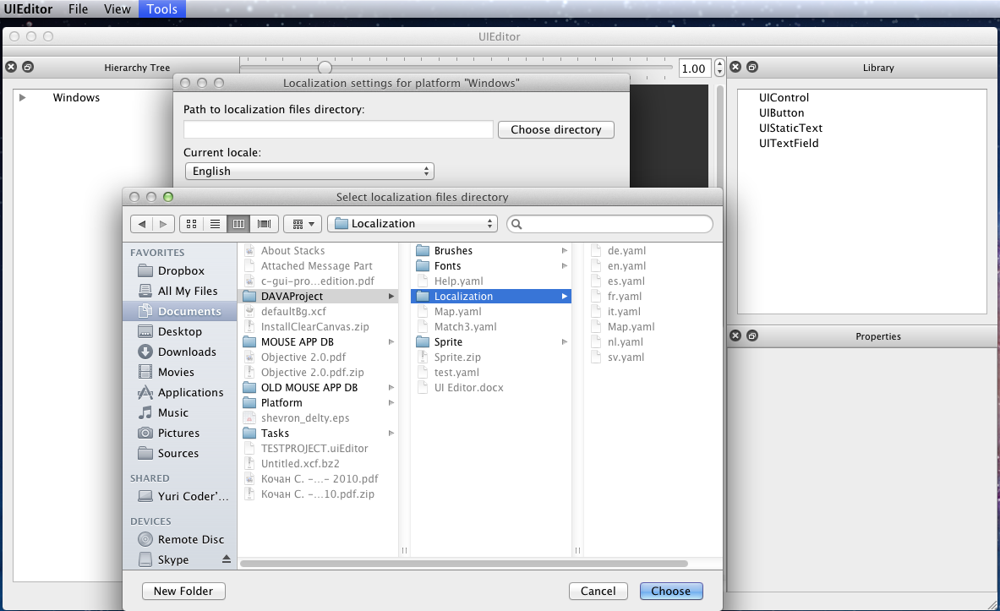